정보통신산업기사 (2004-09-05 기출문제)
1과목: 디지털전자회로
1. 에미터 접지일 때 전류증폭율이 각각 hFE1, hFE2인 두개의 트랜지스터 Q1과 Q2를 그림과 같이 접속하였을 때의 콜렉터 전류 Ic의 크기는?
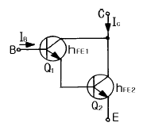
- hFE1 · hFE2 · IB
- (hFE1 / hFE2) · IB
- hFE2(hFE1+1) · IB
- hFE1 · IB + hFE2(hFE1+1) · IB
(정답률: 알수없음)

2. 2-out of-5 code에 해당되지 않는 것은?
- 10010
- 11000
- 10001
- 11001
(정답률: 알수없음)
3. 다음 그림의 회로는 무슨 회로인가?
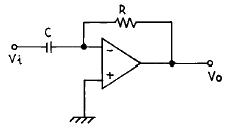
- 미분기
- 적분기
- 가산기
- 증폭기
(정답률: 알수없음)
4. 연산증폭기에 대한 설명이다. 틀린 것은?
- 고이득 차동 증폭기가 주축을 이룬다.
- IC화된 연산 증폭기는 고신뢰도, 고안정도, 회로의 소형화 등 장점이 있다.
- 이상적 연산증폭기인 경우 입력저항은 zero, 출력저항은 ∞ 를 갖는다.
- 가상접지는 물리적인 구성을 표시하는 것이 아니고, 전압증폭도를 구하는데 유용하다.
(정답률: 알수없음)
5. 전원의 출력단에 가장 적합한 증폭기 회로의 형태는?
- 공통 에미터(C-E)증폭기
- 캐스코드(Cascode)증폭기
- 공통 베이스(C-B)증폭기
- 공통 컬렉터(C-C)증폭기
(정답률: 알수없음)
6. 중심 주파수가 455[㎑]이고, 대역폭이 10[㎑]가 되는 단동조회로를 만들려면 이 회로 부하의 Q는 얼마로 하여야 하는가?
- 42.3
- 45.5
- 52.3
- 55.4
(정답률: 알수없음)
7. 8진수 67을 16진수로 바르게 표기한 것은?
- 43H
- 37H
- 55H
- 34H
(정답률: 알수없음)
8. 무변조때의 출력이 1[㎾]인 무선전화 송신기를 80[%] 변조하면 출력은 몇[㎾]가 되는가?
- 0.64[㎾]
- 1.32[㎾]
- 1.80[㎾]
- 2.84[㎾]
(정답률: 알수없음)
9. J - K 플립플롭에서 Jn = 0, Kn = 1일 때 클록펄스가 1 상태라면 Qn+1의 출력상태는?
- 부정
- 0
- 1
- 반전
(정답률: 알수없음)
10. 회로에서 Barkhausen의 발진조건이 만족되는 조건은?
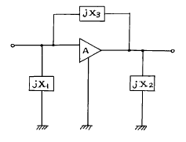
- X1 ＜ 0, X2 ＞ 0, X3 ＞ 0
- X1 ＜ 0, X2 ＜ 0, X3 ＜ 0
- X1 ＞ 0, X2 ＜ 0, X3 ＞ 0
- X1 ＜ 0, X2 ＜ 0, X3 ＞ 0
(정답률: 알수없음)
11. 다음 논리계열 중 스위칭 속도가 제일 빠른 것은?
- TTL
- CMOS
- ECL
- Schottky TTL
(정답률: 알수없음)
12. 다음 회로에서 S=1, R=0 이 인가되었을 때 Q와  의 출력 상태는?
의 출력 상태는?
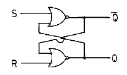
- Q=0,
 =1
=1 - Q=1,
 =1
=1 - Q=0,
 =0
=0 - Q=1,
 =0
=0
(정답률: 알수없음)
13. 전자계산기의 주기억장치에서 전하의 누설에 대비하여 주기적으로 회생(refresh)시켜 주어야 하는 것은?
- Mask ROM
- EPROM
- Static RAM
- Dynamic RAM
(정답률: 알수없음)
14. 다음 궤환증폭기의 특성에 관한 설명 중 틀리는 것은?
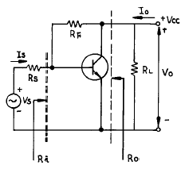
- 궤환으로 입력 임피이던스 Ri는 감소한다.
- 궤환으로 출력 임피이던스 Ro는 감소한다.
- 궤환으로 전류이득 Io/Is는 감소한다.
- RF가 작을수록 출력 전압 Vo는 커진다.
(정답률: 알수없음)
15. 다음 정류회로에 출력전류가 흐르지 않는 범위는? (단, Vi = Vm cos ω t이다.)
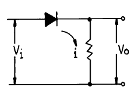
- 0 ＜ ω t ＜ π
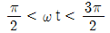
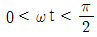
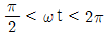
(정답률: 알수없음)
16. PNP 접합 TR 증폭회로에서 콜렉터의 전위는 베이스 전위를 기준으로 했을 때 어떤 전위를 걸어 주어야 하는가?
- 정 전위
- 부 전위
- 같은 전위
- 0 전위
(정답률: 알수없음)
17. D 플립-플롭을 이용하여 그림과 같은 회로를 구성하고, 클럭(clk)단자에 5[kHz] 클럭펄스를 인가하였다. 동작시작단계에서 Q 출력을 +5[V]로 하였다면 출력은?
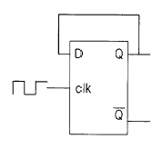
- 10[kHz]
- 2.5[kHz]
- 5[kHz]
- 5[V] DC
(정답률: 알수없음)
18. 다음 논리식을 간단히 하면?
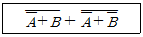
- A
- B
- A + B
- A · B
(정답률: 알수없음)
19. 다음과 같은 RC회로에 직류 기전력을 가했을 때 해당 되지 않는 그림은?
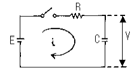
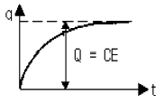
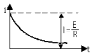
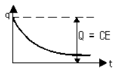
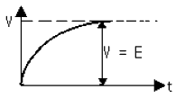
(정답률: 알수없음)
20. 신호파의 최고주파수가 4[kHz] 일 때 PCM 변조방식에서 샘플링 주파수 조건은?
- 4[kHz] 이하
- 5[kHz] 이상
- 6[kHz] 이하
- 8[kHz] 이상
(정답률: 알수없음)
2과목: 정보통신기기
21. 전기 통신망에서 정보를 교환하는 방식이 아닌 것은?
- 회선교환
- 패킷교환
- 망교환
- 메세지교환
(정답률: 알수없음)
22. 다음 중 컴퓨터 보안과 관련이 없는 것은?
- 방화벽
- 사용자 인증
- 암호화 전송
- 공통 정보 관리
(정답률: 알수없음)
23. 다음 중 장거리 전송을 위해 신호를 재생 중계해서 선로를 결합해주는 기능을 제공하는 장치는?
- 모뎀
- 허브
- 리피터
- 라우터
(정답률: 알수없음)
24. 다음 중 비디오텍스의 구성요소가 아닌 것은?
- 전화회선
- TV 수상기
- 데이터베이스
- 고성능 안테나
(정답률: 알수없음)
25. 다음 중 통신제어장치와 관계 없는 것은?
- 전처리장치
- 후처리장치
- 단말인터페이스 프로세서
- 플라즈마 디스플레이 패널
(정답률: 알수없음)
26. 화상통신 서비스 종류 중 센터와 단말기간의 통신(C-E형 서비스)인 것은?
- 팩시밀리
- 모뎀
- 텔레라이팅
- 비디오텍스
(정답률: 알수없음)
27. 다음 중 HDTV 화면의 종횡비는?
- 4 : 3
- 3 : 4
- 16 : 9
- 9 : 16
(정답률: 알수없음)
28. 마이크로 그래픽 단말기에 대한 설명으로 알맞는 것은?
- 문자, 도형, 그림 등으로 구성된 정보를 보관 검색하기 위해 작은 면적에 대량의 정보를 수록한다.
- 마이크로 필림을 기록하는 장치는 CAR이다.
- 마이크로 필림으로부터 정보를 검색하는 장치는 COM이다.
- 종이에 기록된 문자를 직접 광학적으로 읽어낸 장치
(정답률: 알수없음)
29. 정보통신 시스템의 회선 종단 장치 중에 디지털 신호를 전달하기 위한 장치는?
- CCU
- DSU
- PCM
- Modem
(정답률: 알수없음)
30. LAN의 액세스 제어 방식이 아닌 것은?
- CSMA/CD
- TCP/IP
- Token bus
- Token ring
(정답률: 알수없음)
31. 다음 중 정현파 발진기가 아닌 것은?
- LC 발진기
- 수정 발진기
- CR 발진기
- 멀티바이브레이터
(정답률: 알수없음)
32. 다음 중 문자 다중 방송의 약자는?
- TELEX
- TELETEX
- TELETEXT
- VIDEOTEX
(정답률: 알수없음)
33. TDX -10 교환기의 특징이 아닌 것은?
- 국내에서 개발한 전전자 교환기이다.
- 제어방식은 중앙 집중형을 사용한다.
- No.7, R2 신호방식 모두 사용한다.
- 하드웨어 구성은 ASS, INS, CCS 3개의 서브 시스템으로 구성된다.
(정답률: 알수없음)
34. 다음 중 수신기 성능의 평가 대상이 아닌 것은?
- 감도
- 충실도
- 대역폭
- 안정도
(정답률: 알수없음)
35. 무선수신기의 FM복조기 및 주파수합성기에 많이 사용되는 회로는?
- AFC
- IDC
- PLL
- AGC
(정답률: 알수없음)
36. 셀룰러 이동전화 시스템의 구성이 아닌 것은?
- 기지국
- 이동국
- 이동통신 교환국
- 이동통신 집중국
(정답률: 알수없음)
37. 다음 공동이용기의 종류에 해당되지 않는 것은?
- 변복조기 공동이용기
- 디지털 서비스 유니트 공동이용기
- 선로공동이용기
- 컴퓨터 소프트웨어 공동이용기
(정답률: 알수없음)
38. 푸시 버튼 다이얼(MFC) 방식의 특징이 아닌 것은?
- tone/pulse 전환 기능이 있다.
- 톤(tone)의 주파수는 음성대역 주파수이다.
- EMD교환기에 사용하면 유리하다.
- 재 다이얼 기능이 있다.
(정답률: 알수없음)
39. 음성 또는 비음성 서비스를 종합적으로 제공하기 위하여 통화회로와 신호회로를 별도 분리한 ITU-T권고 신호방식은?
- No.7
- R2
- No.5
- X.25
(정답률: 알수없음)
40. 다중화 방식 중에서 채널 활용도가 가장 높은 방식은?
- CDMA
- TDMA
- FDMA
- CSMA
(정답률: 알수없음)
3과목: 정보전송개론
41. ISO의 OSI 7계층 중 5번째 계층은?
- 세션계층
- 표현계층
- 응용계층
- 데이타링크계층
(정답률: 알수없음)
42. 다음 중 양자화 잡음이 나타나지 않는 전송변조방식은?
- PCM
- ADPCM
- 델타변조
- SSB
(정답률: 알수없음)
43. 디지털 데이터의 전송시 다음의 에러제어 방식중 에러의 검출 및 수정을 할 수 있는 방식은?
- 해밍 코드 방식
- 에코 방식
- 그레이 코드 방식
- 패리티 검사 코드방식
(정답률: 알수없음)
44. 광전송 시스템의 구성요소중 광섬유를 통하여 전송된 광을 수신하기 위한 수광소자에 해당하는 것은?
- 반도체 레이저(LD)
- 고체 레이저
- 발광다이오드(LED)
- 에버런치 광검출기(APD)
(정답률: 알수없음)
45. 동축 케이블에서 반사 현상이 생기는 주요 원인으로 가장 타당한 것은?
- 케이블 접속점의 불균일
- 내·외부 도체간의 절연 불균일
- 케이블 내부 구조의 불균일
- 케이블 피복 재료의 종류
(정답률: 알수없음)
46. 다음 전송 신호 방식중 전송로에서 발생하는 저주파 차단영향을 받지 않는 방식은?
- 복류 NRZ
- 단류 RZ
- 복류 RZ
- 바이폴라(Bipolar)
(정답률: 알수없음)
47. 이동통신 가입자가 자신이 가입한 서비스 지역을 벗어나 다른 지역에 가서도 자기가 가입했던 지역에서와 동일하게 통신 서비스를 받을수 있는 기능을 무엇이라 하는가?
- 헤드엔드(head end)
- 로밍(roaming)
- 보코딩(vocoding)
- 전력제어(power control)
(정답률: 알수없음)
48. 패리티 체크(parity check)를 하는 이유는?
- 기억장치의 용량을 검사하기 위하여
- 전송된 부호의 오류를 검출하기 위하여
- 전송된 부호의 용량을 검사하기 위하여
- 검출된 오류를 정정하기 위하여
(정답률: 알수없음)
49. 이동 통신 채널의 특징중 여러 가지 전송 경로에 따라 간섭을 일으켜 수신 신호 레벨의 변동이 발생하는 것과 가장 관계가 깊은 것은?
- 페이딩
- 채널간섭
- 지역 확산
- 도플러 현상
(정답률: 알수없음)
50. 다음 중 다중전송 기법에 해당하지 않는 것은?
- 공간분할 다중화
- 주파수분할 다중화
- 시분할 다중화
- 채널 분할 다중화
(정답률: 알수없음)
51. 다음에서 포인트 투 포인트(point to point)방식의 설명으로 틀린 것은?
- 컴퓨터와 단말기가 1:1로 연결된 방식이다.
- 각 스테이션은 N-1개의 통신 포트가 필요하다.
- 소량의 데이터를 전송하거나 분산된 환경에 가장 적합한 방식이다.
- 스테이션의 수가 증가하거나 거리가 멀면 비용이 증가한다.
(정답률: 알수없음)
52. 백색잡음(white noise)에 가장 근사한 잡음은?
- 산탄잡음
- 플리커 잡음
- 유색잡음
- 열잡음
(정답률: 알수없음)
53. QPSK(4상식 위상 변조) 방식에서 변조 속도가 2400[baud]이면 데이터 신호 속도는 얼마인가?
- 1200[bit/s]
- 2400[bit/s]
- 4800[bit/s]
- 9600[bit/s]
(정답률: 알수없음)
54. 광파이버 내에서 손실의 직접적인 원인이 아닌 것은?
- 코아와 클래드의 경계면이 매끄럽지 않을 때
- 광섬유의 마이크로 밴딩이 있을 경우
- 광섬유 접속시 접속단면이 평행하지 않을 때
- 클래드에 이물질이 있을 때
(정답률: 알수없음)
55. 디지털 변조 방식에서 진폭변조와 위상변조의 혼합형은?
- ASK
- PSK
- APK
- QPSK
(정답률: 알수없음)
56. 동축 케이블에 대한 다음 설명중 잘못된 것은?
- 근단누화가 많이 발생한다.
- 누화 때문에 60[KHz]이하에서는 잘 사용하지 않는다.
- 광대역 전송로에 이용된다.
- 비유전율 1을 가지는 동축 케이블내에서의 전파속도는 광속과 같다.
(정답률: 알수없음)
57. PCM 시스템에서는 ISI를 측정하기 위해 눈 패턴(eye pattern)을 이용하는데 눈을 뜬 상하의 높이는 무엇을 나타내는가?
- 잡음에 대한 여유도
- 시스템의 감도
- ISI의 정도
- 전송되는 데이터의 양
(정답률: 알수없음)
58. 직경 0.4mm인 케이블로 측정 주파수 2[㎑]인 가입자 선로의 손실이 8[dB]로 설계하고자 한다. 이때 케이블의 적정한 거리는? (단, 0.4mm 케이블의 감쇄 손실은 1.9[dB/Km]이다.)
- 2.6
- 3.7
- 4.2
- 5.0
(정답률: 알수없음)
59. OSI-7 프로토콜중 네트웍층이 하는 역할을 바르게 나타낸 것은?
- 회선의 제어규칙
- 회선의 전기규칙
- 오류의 감지와 제어
- 데이터의 전송과 교환
(정답률: 알수없음)
60. 다음에서 동기식 전송의 설명으로 틀린 것은?
- 비트마다 동기가 취해지므로 한번에 긴 데이터를 송·수신할 수 있다.
- 정하여진 숫자만큼의 문자열을 묶어 일시에 전송한다.
- 비동기 전송보다 전송효율과 전송속도가 높다.
- 수신측은 처음 0의 상태인 start bit를 감시하므로 송신개시를 알 수 있다.
(정답률: 알수없음)
4과목: 전자계산기일반 및 정보설비기준
61. 전기통신설비의 기술기준에서 정하는 강전류전선이란 몇 [V]이상의 전력을 송전하거나 배전하는 전선을 말하는가?
- 100[V]
- 200[V]
- 300[V]
- 400[V]
(정답률: 알수없음)
62. 16진수 73C.4E 를 10진수로 변환하면 다음 중 어느 값이 근사치인가?
- 185.23
- 1852.3⑤
- 18523.⑤
- 123.25
(정답률: 알수없음)
63. 다음 중 정보의 수집.가공.저장.검색.송신.수신중에 정보의 훼손.변조.유출등을 방지하기 위한 관리적· 기술적 수단을 강구하는 것을 정의하는 용어는?
- 정보화
- 정보통신
- 정보보호
- 정보자원
(정답률: 알수없음)
64. 기간통신사업을 경영하는 조건에 관해 틀린 사항은?
- 정보통신부장관의 허가를 받아야 한다.
- 허가의 대상자는 법인이어야 한다.
- 전기통신설비의 규모의 적정성이 있어야 한다.
- 통신위원회의 심의를 거쳐야 한다.
(정답률: 알수없음)
65. 통신회선의 평형도 단위는?
- 도(°)
- 데시벨(dB)
- 퍼센트(%)
- 미터(m)
(정답률: 알수없음)
66. 기간통신사업자는 전기통신역무에 관한 그 역무별 요금 및 이용조건을 정하여 공시하여야 하는바, 이를 무엇이라고 하는가?
- 시행규칙
- 통신규약
- 기술기준
- 이용약관
(정답률: 알수없음)
67. 중앙처리장치로부터 발생되는 기억장치 읽기 신호와 쓰기 신호를 이용하여 입출력장치에 대한 읽기와 쓰기를 수행할 수 있는 방식은?
- Interrupt I/O
- Isolated I/O
- Programmed I/O
- Memory Mapped I/O
(정답률: 알수없음)
68. 불온통신을 억제하고 건전한 정보문화를 확립하기 위하여 설치한 기구는?
- 통신위원회
- 한국정보문화센터
- 정보통신진흥협회
- 정보통신윤리위원회
(정답률: 알수없음)
69. 다음 설명 중 틀린 것은?
- 기계어는 컴퓨터가 직접 해석하고, 명령을 실행할 수 있는 언어이다.
- 어셈블리 언어는 기계어에 대응하는 의사 기호를 사용하여 기술한 기호 언어이다.
- C언어는 유닉스용으로 개발한 언어로서 객체지향적인 프로그래밍 언어이다.
- PL/I는 복잡한 데이터를 쉽게 처리할 수 있으나, 리스트 처리가 불가능하다.
(정답률: 알수없음)
70. 인터럽트 발생시 되돌아 올 주소(Return Address)를 기억시키기 위하여 사용되는 것은?
- Program Counter
- Accumulator
- Data Segment
- Stack
(정답률: 알수없음)
71. 정보통신부장관이 수립하는 정보화촉진기본계획에 포함되지 않는 것은?
- 지적소유권의 보호에 관한 사항
- 정보통신기반의 고도화에 관한 사항
- 정보통신산업의 기반조성에 관한 사항
- 공공기관의 정보통신망 관리 및 운영에 관한 사항
(정답률: 알수없음)
72. 다수의 인터럽트 요청이 있는 경우, 특정한 인터럽트 요구에 대해서만 인터럽트가 금지되도록 사용하는 것은?
- 인터럽트 인에이블(interrupt enable)
- 벡터 테이블(vector table)
- 인터럽트 마스크(interrupt mask)
- 우선순위(priority)
(정답률: 알수없음)
73. 정보를 기억장치에 기억시키거나 읽어내는 명령이 있고난 후부터 실제로 데이터가 기억되거나 또는 읽기가 시작되는데 소요되는 시간은?
- Access time
- Cycle time
- Search time
- Seek time
(정답률: 알수없음)
74. 일반적인 컴퓨터 구조에서 CPU에 포함되지 않는 것은?
- 제어장치
- 레지스터
- 보조기억장치
- 논리연산장치
(정답률: 알수없음)
75. 다음 중 정보통신설비에 관해 가장 적합하게 설명한 것은?
- 기계조직의 효율적 동작 및 이용을 위한 프로그램의 이용 기술
- 전자계산조직에 직접 관련되는 입.출력장치, 보조기억장치, 단말장치 등
- 전자계산조직 및 주변기기의 입.출력 정보자료
- 정보를 저장처리하는 장치나 그에 부수되는 입출력장치를 이용하여 정보를 송수신 또는 처리하는 설비
(정답률: 알수없음)
76. 정보통신을 행하는 상대방이 미리 결정되어 있어 별도의 호출설정과정을 거치지 않고 바로 통신할 수 있는 논리적 회선을 말하는 것은?
- 패켓형 단말장치
- 문자형 단말장치
- 고정가상회선(PVC)
- 교환가상회선(SVC)
(정답률: 알수없음)
77. 마이크로 컴퓨터에서 널리 채택되어 있는 코드로서 특히 데이터 통신용으로 많이 쓰이고 있는 것은?
- ASCII
- UNICODE
- HAMMING CODE
- GRAY CODE
(정답률: 알수없음)
78. 다음 중 명령어가 해독되는 장치는?
- main storage
- ALU
- control unit
- instruction counter
(정답률: 알수없음)
79. 논리회로에서의 인버터(inverter)와 같이 복잡한 논리연산을 위한 연산자로 이용되며 음수의 표현에 필요한 연산기는?
- MOVE
- Complement
- AND 연산
- OR 연산
(정답률: 알수없음)
80. 다음 중 ITU-T에서 정의된 0[㏈ｍ]과 관련된 사항이 아닌 것은?
- 1.29[㎃]
- 600[Ω ]의 회선
- 1[㎽]
- 0.5[Ｖ]의 전원전압
(정답률: 알수없음)